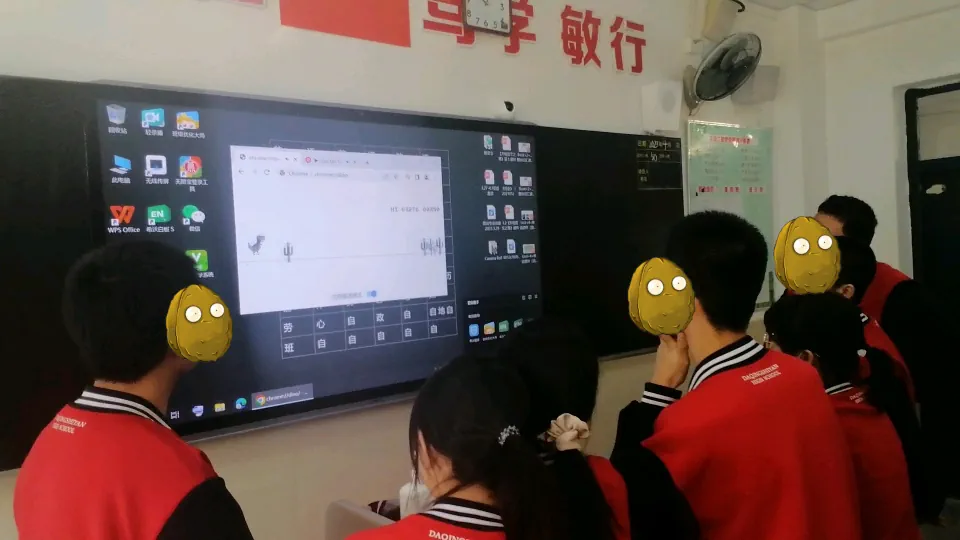
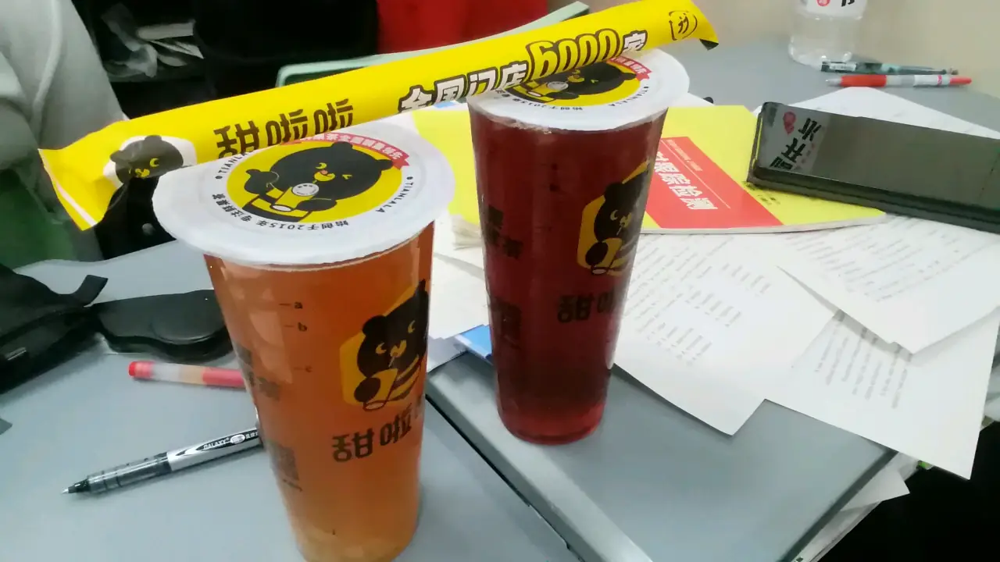
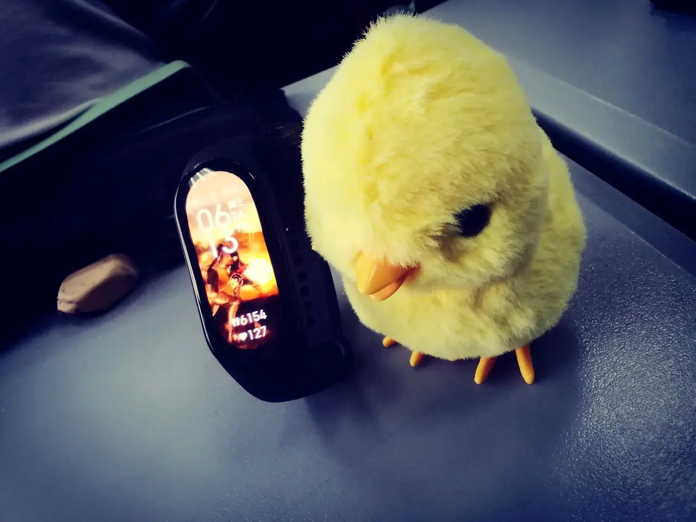
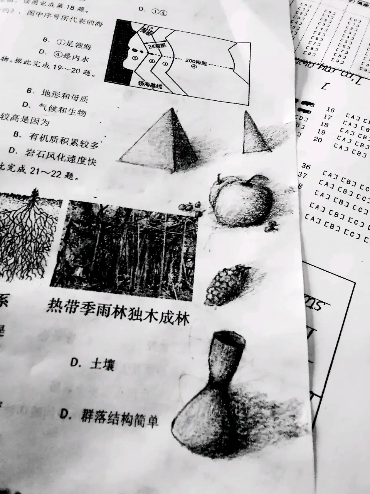

|2023-08-18|
还没放假就想写一篇高一小记了，结果一直迟迟未能动手。全篇抒情肯定没人看，再说我也写不出来。遂放几张图片，佐以文字，认真而又简单地记述一下。
先放一张最能勾起回忆的图。
大课间的大家时候在玩谷歌小恐龙，后台放着歌手 DEAMN 的 Save Me，这种风格的歌在教室放效果相当好。
原来班级的这种氛围真的是再也感受不到了，大家其乐融融，然后我们班的成绩还是同层次最高的。
这已经是分班后了，我保持了原班不动，同时体验了一把物是人非。暂时来代课的数学老师还很年轻，为了奖励我们班在他赛课时的优秀表现，给全班每个人买了一杯果茶。
同桌花十元大洋买的玩具小鸡，里面有一个发条结构可以让小鸡原地蹦跶，十分喜感。
考地理的时候无聊，画了两笔素描（但是扔好几年不太会了）考政治的时候没事闲的推物理公式，考历史的时候列了杂合子八代连续自交😀